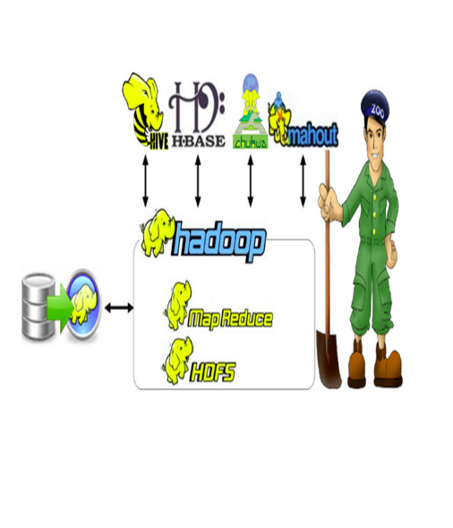
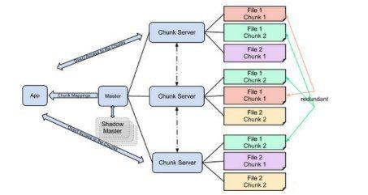
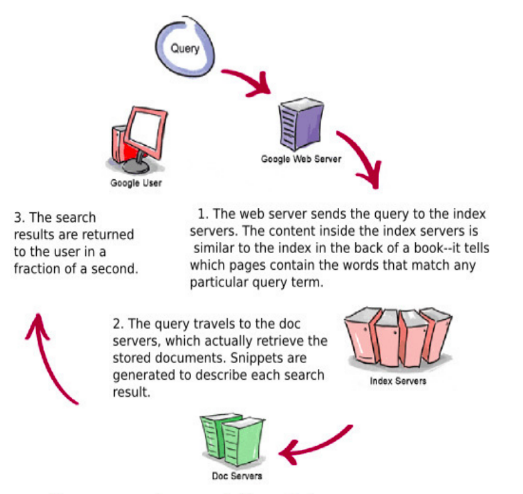
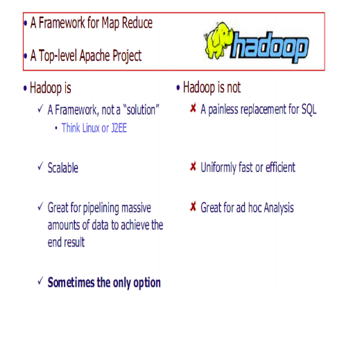

Introduction To Hadoop Ecosystem¶
Data¶
We live in the data age. The size of the “digital universe” at 0.18 zettabytes in 2006, and isforecasting a tenfold growth by 2011 to 1.8 zettabytes.1 A zettabyte is 10^21 bytes, or equivalently one thousand exabytes, one million petabytes, or one billion terabytes.
- This lood of data is coming from many sources. Consider the following:
- The New York Stock Exchange generates about one terabyte of new trade data per day.
- Facebook hosts approximately 10 billion photos, taking up one petabyte of storage.
So there’s a lot of data out there.
Breif History of Hadoop¶
Hadoop has its origins in Apache Nutch, an open source web search engine, itself a part of the Lucene project
Apache Nutch is a project of the Apache Software Foundation. Nutch was started in 2002. However, they realized that their architecture wouldn’t scale to the billions of pages on the Web.
Help was at hand with the publication of a paper in 2003 that described the architecture of Google’s distributed ilesystem, called GFS, which was being used in production at Google¶
- A GFS cluster consists of multiple nodes.These nodes are divided into two types: one Master node and a large number of Chunkservers
- In 2004, they set about writing an open source implementation, the Nutch Distributed Filesystem (NDFS).
- Hadoop was created by Doug Cutting and Michael J. Cafarella 2005. Doug, who was working at Yahoo at the time, named it after his son’s toy elephant. It was originally developed to support distribution for the Nutch search engine project.
Google File System GFS Architecture.¶
Google’s Query Processor¶
Let’s see how Google processes Query
What Hadoop is, and what it’s not¶
The core of Hadoop¶
- MapReduce
- Created at Google in 2004
- The MapReduce framework is the powerhouse behind most of today’s big data processing
- In addition to Hadoop, you’ll ind MapReduce inside MPP and NoSQL databases, such as Vertica or MongoDB.
- At its core, Hadoop is an open source MapReduce implementation, feb 2006. Funded by Yahoo
- The ability of MapReduce to distribute computation over multiple servers
- HDFS
- MapReduce computation to take place, each server must have access to the data. This is the role of HDFS, the Hadoop Distributed File System.
- HDFS and MapReduce are robust.
- Servers in a Hadoop cluster can fail and not abort the computation process.
- HDFS ensures data is replicated with redundancy across the cluster.
- On completion of a calculation, a node will write its results back into HDFS.
- Improving programmability: Pig and Hive
- Improving data access: HBase, Sqoop and Flume
The Hadoop Components¶
- Ambari :- Deployment, coniguration and monitoring
- Flume :- Collection and import of log and event data
- HDFS :- Distributed redundant ile system for Hadoop
- Hive :- Data warehouse with SQL-like access
- MapReduce :- Parallel computation on server clusters
- Sqoop :- Imports data from relational databases
- Zookeeper :- Coniguration management and coordination